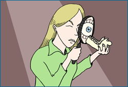
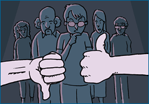
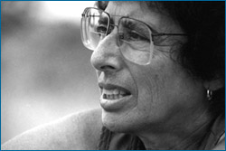

The scientific community provides a system of checks and balances that ensures the quality of scientific work, double-checks arguments, and makes sure that ideas are evaluated fairly. This scrutiny can serve a few different functions — from fact-checking to whistleblowing:

The community evaluates evidence and ideas. Scientists describe their work at conferences, in journal articles, and in books. By disseminating their ideas, study methods, and test results in these ways, scientists allow other community members to check their work, both by reviewing what has been done and trying to replicate all or part of it. This helps to ensure that evidence meets high standards, that all relevant lines of evidence are explored, that judgments are not based on flawed reasoning, and hence, that science moves in the direction of more and more accurate explanations. For example, in 1989, when two scientists claimed to have produced nuclear fusion at temperatures lower than was thought possible, the scientific community took a close look at their methods and results. Community members found several ways to improve the experiments and several tests that the original researchers had failed to perform. Meanwhile, other scientists got started on trying to replicate the experimental results and discovered that they could not be consistently reproduced. The scientific community ultimately found that the evidence was not compelling enough to warrant accepting the researchers' claims.

The community balances biases. Scientists are people too. They come from different backgrounds, have different personal beliefs, and favor different hypotheses and theories — and all of that can result in unintentional biases — even when scientists strive to remain objective. Luckily, the scientific community is diverse, and for every scientist who looks at a result through rose-tinted glasses, there is another who peers at it through her own blue-tinted ones. Because of the community's diversity, individual biases are balanced out and the community as a whole can evaluate scientific ideas fairly.
CHECKS AND BALANCES

Jeanne Altmann has studied the behaviors and social interactions of primates, primarily baboons, for more than 35 years.
Before the 1970s, the field of primatology was dominated by men. Male scientists observed and recorded primate behavior in the wild, male scientists developed explanations to understand those behaviors, and male scientists read and evaluated each others' work. And at that time, observations suggested that primate social life was largely controlled by males, with females playing a more passive role. But that changed when women scientists began to work in the field in the 1970s. Because of their own gender experiences, these women paid more attention to subtleties in the female primates' behavior, and revealed that female primates actually have elaborate sex lives and manipulate male behavior in many ways. So in this case, a diverse assemblage of scientists counterbalanced each others' biases, leading to a more complete and accurate understanding of primate societies.
The community helps identify and eliminate fraud. Though fraud is rare in science, it sometimes happens. These occasional cases of fraud are identified through the scrutiny of the scientific community. For example, a recent case in which medical researcher Jon Sudbø faked data on 900 Norwegian patients was discovered by another scientist familiar with the group of patients with whom he claimed to be working. Because they build upon the work of others, scientists take fraud very seriously. No one wants to build their own work on a shaky foundation supplied by fraudulent ideas. To learn more, skip ahead to The scientific community and misconduct.
Science depends on its community in many ways: from the specific (e.g., catching a mistake in an article) to the general (e.g., dividing up the enormous amount of work that keeps science moving forward). Being part of that community means meeting some expectations …